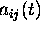

The action set of each agent is three numbers 0, 1 and 2, where 0 is related to inaction (sitting, not clappping), 1 referes to sitting and clapping, and 2 refers to standing and clapping. The realization of the action of an agent (i,j) at time t is denoted as  . Time is discrete.